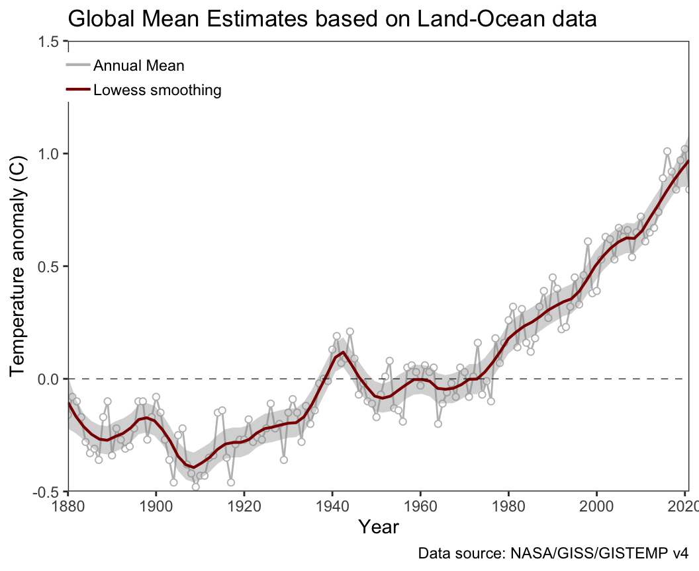
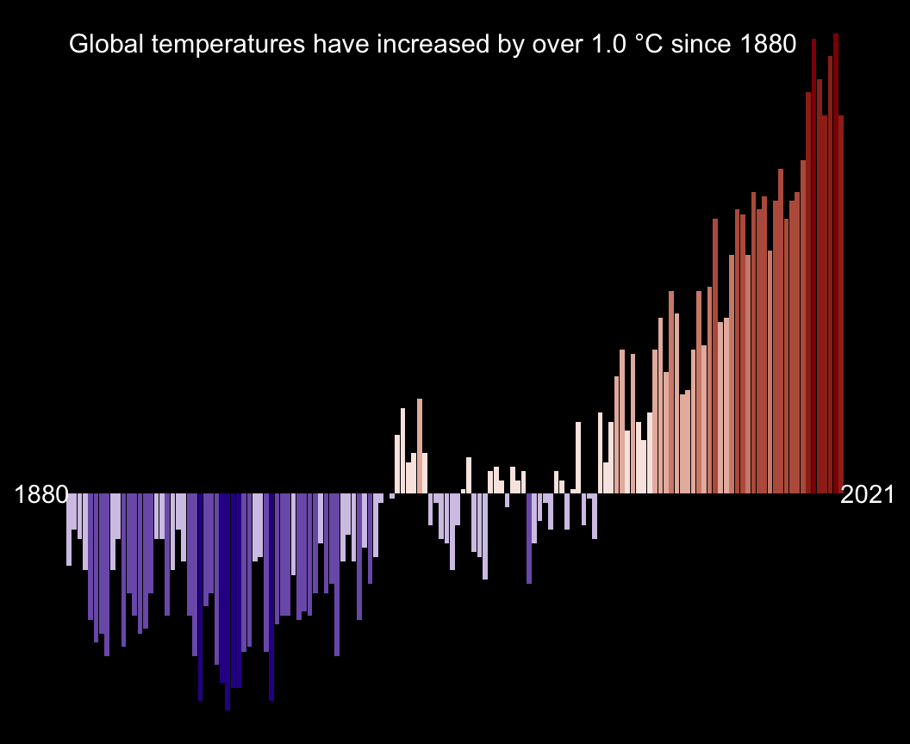

library(tidyverse)
library(scales)
library(glue)2 Documentation for global temperature data vis
2.1 Statement of purpose
Here, we want to explore global temperature fluctuations from 1880 to present to look at:
- global trends
- seasonal trends
2.2 Data sources
The GISS Surface Temperature Analysis ver. 4 (GISTEMP v4) is an estimate of global surface temperature change and relevant data was retrieved from: NASA GISS: Datasets –> GISTEMP surface temperature –> Global-mean monthly, seasonal, and annual means, 1880-present, updated through most recent month.
The table accessible via this link and moved into the data folder on November 14th, 2022.
2.3 Data analysis
2.3.1 Used libraries
2.3.2 Read in Data
Since column names start in second row, we need to skip the first line, when reading in the data. NAs are indicated by ***
#read in table
temp_data <- read.csv("../data/GLB.Ts+dSST.csv", skip = 1, na = "***")
#view table
head(temp_data) Year Jan Feb Mar Apr May Jun Jul Aug Sep Oct Nov Dec
1 1880 -0.18 -0.24 -0.08 -0.15 -0.09 -0.20 -0.17 -0.09 -0.14 -0.22 -0.20 -0.17
2 1881 -0.19 -0.13 0.04 0.06 0.08 -0.18 0.01 -0.03 -0.15 -0.21 -0.17 -0.06
3 1882 0.17 0.14 0.05 -0.15 -0.13 -0.21 -0.16 -0.07 -0.14 -0.23 -0.16 -0.35
4 1883 -0.28 -0.36 -0.12 -0.18 -0.17 -0.06 -0.07 -0.13 -0.21 -0.11 -0.24 -0.11
5 1884 -0.12 -0.08 -0.36 -0.39 -0.33 -0.34 -0.30 -0.27 -0.27 -0.24 -0.33 -0.30
6 1885 -0.58 -0.33 -0.26 -0.41 -0.44 -0.43 -0.33 -0.31 -0.28 -0.23 -0.23 -0.09
J.D D.N DJF MAM JJA SON
1 -0.16 NA NA -0.11 -0.16 -0.19
2 -0.08 -0.09 -0.16 0.06 -0.06 -0.18
3 -0.10 -0.08 0.08 -0.08 -0.14 -0.17
4 -0.17 -0.19 -0.33 -0.15 -0.09 -0.19
5 -0.28 -0.26 -0.10 -0.36 -0.31 -0.28
6 -0.33 -0.34 -0.40 -0.37 -0.36 -0.25Initial observations:
- The data is in long data and includes both monthly data, as well as averages for intervals, such as January to December. To simplify this, we want to only keep relevant columns and store them in long format.
2.3.3 Data cleaning
#select only yearly averages and rename columns in a more consistent manner
JD_data <- temp_data |>
#select relevant columns
select(year = Year, t_diff = J.D) |>
#drop nas
drop_na()
head(JD_data) year t_diff
1 1880 -0.16
2 1881 -0.08
3 1882 -0.10
4 1883 -0.17
5 1884 -0.28
6 1885 -0.33dim(JD_data)[1] 142 2#view structure
glimpse(JD_data)Rows: 142
Columns: 2
$ year <int> 1880, 1881, 1882, 1883, 1884, 1885, 1886, 1887, 1888, 1889, 189~
$ t_diff <dbl> -0.16, -0.08, -0.10, -0.17, -0.28, -0.33, -0.31, -0.36, -0.17, ~#extract dates
annotation <- JD_data |>
arrange(year) |>
slice(1, n()) |>
mutate(t_diff = 0,
x = year + c(-5, 5))
head(annotation) year t_diff x
1 1880 0 1875
2 2021 0 2026#get max temp difference
max_t_diff <- format(round(max(JD_data$t_diff),1), nsmall = 1)
max_t_diff[1] "1.0"2.3.4 Data visualization
2.3.4.1 Line plot
ggplot(JD_data, aes(year, t_diff)) +
geom_line(aes(color = "1"), size = 0.5) +
geom_point(aes(color = "1"), fill = "white", shape = 21, show.legend = FALSE) +
geom_smooth(aes(color = "2"), size = 0.75, span = 0.15) +
geom_hline(yintercept = 0, size = 0.2, linetype = "dashed") +
#define plot boundaries
scale_x_continuous(breaks=seq(1880, 2023, 20), expand = c(0,0)) +
scale_y_continuous(limits = c(-0.5, 1.5), expand = c(0,0)) +
#change colors for legend
theme_bw() +
scale_color_manual(name = NULL,
breaks = c(1,2),
values = c("gray", "darkred"),
labels = c("Annual Mean", "Lowess smoothing")) +
#remove grey box in legend
guides(color=guide_legend(override.aes=list(fill=NA))) +
theme(
#axis.ticks = element_blank(),
panel.grid = element_blank(),
legend.position = c(0.12, 0.92),
legend.title = element_text(size = 0),
legend.key.height = unit(14, "pt"),
legend.margin = margin(0,0,0,0)
) +
labs(title = "Global Mean Estimates based on Land-Ocean data",
caption = "Data source: NASA/GISS/GISTEMP v4",
x = "Year", y = "Temperature anomaly (C)")
ggsave("../figures/temperature_line_graph.pdf", width = 7, height = 4)2.3.4.2 Bargraphs
ggplot(JD_data, aes(x = year, y= t_diff, fill = t_diff)) +
geom_col(show.legend = FALSE) +
geom_text(data = annotation, aes(x = x, label = year), color = "white") +
annotate("text", x = 1880, y = 1, size = 4, hjust = 0,
label = glue("Global temperatures have increased by over {max_t_diff} \u00B0C since {min(JD_data$year)}"),
color = "white") +
#scale_fill_gradient2(low = "darkblue", mid = "white", high = "darkred",
# midpoint = 0, limits = c(-0.5, 1.5) ) +
#scale_fill_gradientn(colors = c("darkblue", "white", "darkred"),
# values = rescale(c(min(JD_data$t_diff), 0, max(JD_data$t_diff))),
# limits = c(min(JD_data$t_diff), max(JD_data$t_diff))) +
scale_fill_stepsn(colors = c("darkblue", "white", "darkred"),
values = rescale(c(min(JD_data$t_diff), 0, max(JD_data$t_diff))),
limits = c(min(JD_data$t_diff), max(JD_data$t_diff)),
n.breaks = 9) +
theme_void() +
theme(
plot.background = element_rect(fill = "black"),
legend.text = element_text(color = "white", size = 8)
)
ggsave("../figures/temperature_columns.pdf", width = 7, height = 4)2.4 Summary of analysis
- Global temperatures have increased since the 1880s by 1.0C, this increase was almost linear since 1980.